Astronomia (AST0001) · Curso de Física · UDESC
Radiação, corpo negro e espectros
Aula 6 · Capítulo 6 · como se lê uma estrela sem tocar nela
Prof. Dr. Rafael Camargo Rodrigues de Lima · 2026/2
O que o Capítulo 5 deixou em aberto
- Newton deu massas, órbitas, energia e a forma das trajetórias
- Mas nada disso diz de que uma estrela é feita
- Nem quão quente ela é
- Nem se está vindo na nossa direção
- De uma estrela chega uma coisa só, e é sempre a mesma: luz
Nenhuma amostra, nenhuma sonda, nenhum termômetro. O curso inteiro depende de saber ler o que vem dentro dessa luz.
A cadeia de hoje
fóton → espectro → temperatura, composição, movimento
Cada seta é uma inferência, e cada inferência carrega hipóteses que precisam ser ditas em voz alta.
A luz transporta energia, direção, polarização e informação espectral. Hoje interessam as duas últimas.
Vamos percorrer o caminho duas vezes
Travessia 1 — o que se mede. Pegar um espectro e tirar dele temperatura, cor e velocidade radial. Wien, Stefan-Boltzmann, Doppler, fotometria de abertura. É o que o laboratório cobra, e cabe em papel e lápis.
Travessia 2 — de onde vem. A lei de Planck deduzida do zero, a equação de transporte, Saha, atmosferas estelares. Nenhuma fórmula nova para o laboratório: é a resposta à pergunta por que aquelas funcionam.
A primeira você usa hoje à tarde. A segunda é o que separa usar de entender.
Travessia 1 — o que se mede
Tudo nesta parte sai de um espectro e de uma régua.
Nenhuma constante precisa ser deduzida ainda; basta saber que existe.
Um fóton
Comprimento de onda menor significa fóton mais energético. É essa única relação que amarra cor, temperatura, transições atômicas e processos de alta energia.
Corpo negro: o ponto de partida
- Absorve tudo o que chega e emite em função de uma variável só: T
- Nem composição, nem forma, nem tamanho entram na curva
- Nenhum objeto real é um corpo negro perfeito
- Mesmo assim é a curva contra a qual todo espectro real é comparado
A pergunta útil nunca é isto é um corpo negro?, e sim onde e por quanto este espectro se afasta de um?
A lei de Planck, em quatro temperaturas
Em log-log o efeito é duplo: o pico anda para a esquerda (Wien) e a curva inteira sobe, porque o fluxo integrado cresce com T⁴. Nenhuma curva cruza outra — a estrela mais quente emite mais em todo comprimento de onda, não só no azul.
Explorar: a curva de Planck, temperatura a temperatura
A curva inteira sobe e anda para a esquerda, e nenhuma cruza outra. A tracejada dourada é a lei de Wien — o lugar geométrico dos picos, um caso especial desta curva e não um assunto à parte.
A lei de Wien
A regra que explica por que estrela fria parece avermelhada e estrela quente puxa para o azul. Não use mecanicamente: atmosferas reais têm linhas, bandas moleculares, opacidade dependente do comprimento de onda e poeira no caminho.
A mesma lei, em unidades de trabalho
λ em nanômetros, T em kelvin. É esta a forma que vai ser digitada no laboratório.
Mas o Sol não é um corpo negro
O envelope é bem reproduzido; os desvios é que são informativos. No ultravioleta o Sol entrega só 65% do previsto — a opacidade cresce e a radiação escapa de camadas mais altas e frias. No infravermelho, supera o ideal em 19%. Corpo negro é ponto de partida, não descrição completa.
Antes de aplicar Wien: o que o detector mede
Um espectro observado não começa como fluxo físico. Começa como contagens: resposta instrumental, corrente de escuro e ruído, tudo somado ao sinal.
A redução tenta desfazer isso
Subtrair o dark, dividir pela resposta instrumental. Só depois disso a curva na tela tem alguma relação com a curva que a estrela emitiu.
Por que calibração não é burocracia
Mesma estrela, mesmo espectro. Em cima, o contínuo calibrado; embaixo, o mesmo espectro bruto, cujo pico a resposta instrumental empurrou para 610 nm. 820 K de diferença, e nenhum sintoma na tela avisando.
Stefan-Boltzmann
Potência emitida por unidade de área de superfície. Cresce com a quarta potência: dobrar a temperatura multiplica a emissão por dezesseis.
Explorar: a integral que vira σT⁴
O eixo é linear de propósito: a área pintada é literalmente a integral. Feche os limites numa faixa e sobra pouco; abra até 0 e ∞ e os dois números da direita ficam iguais.
O que de fato chega até nós
A divisão de trabalho do capítulo inteiro: a temperatura vem da forma do espectro; o raio e a distância entram apenas na normalização do fluxo.
Antes da cor, o filtro
Medir cor exige medir o brilho em pelo menos duas faixas separadas do espectro. Quem faz essa separação é uma peça física, posta no caminho da luz entre o telescópio e o detector.
Ela não mede nada. Ela descarta — deixa passar uma faixa e bloqueia o resto. O detector, que é cego a cor, conta o que sobrou.
Um detector CCD não sabe de que comprimento de onda veio cada fóton: ele conta elétrons. Toda a informação de cor entra pela escolha do filtro.
Vidro colorido: o caso simples
Filtros de vidro absorvente: o corante no vidro absorve certos comprimentos de onda e deixa outros atravessarem. É a mesma física de um vitral, e foi assim que a fotometria começou. O nome gravado no aro diz a banda. — Dmitry Makeev, CC BY-SA 4.0 · Wikimedia Commons
Interferência: o caso moderno
Um filtro de interferência não absorve: é uma pilha de dezenas de camadas finas sobre a lâmina, e as reflexões entre elas se cancelam em todo comprimento de onda menos numa faixa estreita, que atravessa. O verde que se vê é a própria banda que ele deixa passar. Bordas muito mais abruptas que as do vidro. — Geek3, CC BY-SA 4.0 · Wikimedia Commons
Em escala de observatório
A câmera do Observatório Vera C. Rubin e seus seis filtros ugrizy, cada um com 75 cm — a pessoa à direita dá a escala. Só um fica no caminho da luz por vez; trocar de banda é trocar de filtro, mecanicamente. Imagem de divulgação. — Todd Mason, Mason Productions Inc./Vera C. Rubin Observatory/NOIRLab/NSF/AURA, CC BY 4.0
O que cada filtro deixa passar
O sistema Johnson-Cousins, sobre o espectro de uma estrela como o Sol. Nenhum filtro é um corte limpo: cada um tem um pico, ombros e asas, e bandas vizinhas se sobrepõem. A largura a meia altura é o que se chama de largura da banda. Curvas representativas do sistema, não os dados de um fabricante.
O que o detector realmente soma
O diagrama inteiro da fotometria em três painéis: o espectro que chega, a transmissão do filtro, e o produto dos dois. A contagem é a área do terceiro painel — e é por isso que a próxima equação tem uma integral de Fλ vezes S(λ) no numerador.
Cor: um filtro mede uma média
Nenhum filtro mede um comprimento de onda único. Ele integra o fluxo pesado pela curva de transmissão — e é essa média que vira magnitude.
O índice de cor
Já definido no Capítulo 2, lá com a constante de ponto zero. Entre alvos medidos no mesmo instrumento a constante se cancela, e basta a razão de fluxos.
De onde sai o sinal do índice
As mesmas duas bandas, em duas estrelas. Na fria sobra fluxo no V e o índice fica positivo; na quente sobra no B e ele fica negativo. Sem o ponto zero estes não são os valores de catálogo — o que vale aqui é o sinal e a ordem entre as duas.
Cor a partir de fluxos
Com FB/FV = 1,20 daria B−V ≈ −0,20: espectro mais azul e, em geral, temperatura efetiva maior.
Só que poeira também avermelha
A advertência do Capítulo 2, que vale para qualquer trabalho fotométrico. Cor observada só vira temperatura depois de descontada a extinção.
Linhas: assinaturas de quantização
- Átomos e moléculas só absorvem e emitem diferenças específicas de energia
- Uma linha de H, Ca, Na ou Fe é pista de presença química
- Mas a intensidade depende de temperatura, ionização, densidade e opacidade
- Linha fraca não significa elemento ausente
Pode significar apenas que o elemento está no estágio de ionização errado, ou que as condições físicas não favorecem aquela transição. A Travessia 2 quantifica isso.
O efeito Doppler
Espectros viram medidores de movimento. É assim que se descobrem binárias espectroscópicas, rotação estelar, expansão de nebulosas, discos de acreção, exoplanetas por velocidade radial e o desvio para o vermelho das galáxias.
Hα deslocada
Um deslocamento de 0,23 nm sobre 656 nm já são 105 km/s. O sinal negativo indica aproximação. Em qualquer entrega, informe a linha, o comprimento de onda de repouso, o observado e o sinal.
Fluxo integrado
Não é o fluxo bolométrico: falta a radiação fora da faixa observada. Serve para comparar objetos medidos com o mesmo instrumento e a mesma redução — e só.
De onde vem a luz, e de onde vem o fundo
Fotometria de abertura e PSF são do Capítulo 3, inclusive o raio ótimo de 1,5 vez a largura a meia altura. O que muda aqui: a mesma operação passa a ser feita comprimento de onda a comprimento de onda.
O que custa ignorar o fundo
A abertura de fundo tem área quatro vezes maior, então entra dividida por quatro. Ignorá-la superestimaria o fluxo em 6% — o bastante para deslocar temperatura por cor, fluxo integrado e profundidade de linha.
O laboratório do capítulo
Uma versão complementar com imagens reais do SDSS fica em laboratorio-capitulo-3b, para comparar simulação controlada com dados de verdade.
Os oito experimentos
- Aquisição: por que o espectro fica menos irregular com mais fótons
- Abertura: três raios, mesmo fundo, o que muda
- Fundo: região limpa contra região contaminada
- Calibração: bruto, com dark, com dark + resposta
- Wien: três estrelas, ordenar por temperatura
- Bandas: B−V contra a temperatura de Wien
- Linhas: velocidade radial por Hα, Hβ ou Na D
- Interpretação: o que foi medido, o que foi inferido
A entrega leva o CSV exportado, pelo menos três alvos, os raios usados, o tempo acumulado, os cálculos e uma interpretação curta separando observação direta de inferência física.
Travessia 2 — de onde vem
Nada do que vem agora é necessário para fazer o laboratório.
Tudo o que vem agora é necessário para acreditar nele.
Onze seções, uma pergunta: por que as leis da Travessia 1 são verdade?
Antes de qualquer lei: intensidade específica
Energia que atravessa uma área, num intervalo de tempo, dentro de um ângulo sólido em torno de uma direção, e num intervalo de frequência. Unidade: W m−² sr−¹ Hz−¹. O esterradiano é o ângulo sólido do Capítulo 1.
A propriedade decisiva
Na ausência de emissão ou absorção, Iν é constante ao longo de um raio.
Parece contradizer o inverso do quadrado, mas não contradiz: afastando-se de uma fonte extensa, o fluxo cai com d−² e o ângulo sólido cai com d−². A razão entre os dois — que é a intensidade — não muda.
É por isso que a superfície do Sol tem o mesmo brilho superficial vista da Terra ou de Júpiter, embora entregue fluxos muito diferentes.
Os momentos da intensidade
Integrar com peso cosθ dá o fluxo; sem peso, a densidade de energia; com peso cos²θ, a pressão de radiação. Três grandezas, uma função.
Campo isotrópico
P = u/3 é a equação de estado da radiação. Reaparece na estrutura estelar, na cosmologia do universo primordial e em discos de acreção — e vale para qualquer gás ultrarrelativístico, não só fótons.
A equação de transporte radiativo
Ao percorrer um caminho dentro de um meio, a intensidade perde energia por absorção e ganha por emissão. κ é a opacidade; j, o coeficiente de emissão.
Duas definições, e ela fica canônica
Profundidade óptica e função fonte. A equação vira uma diferencial linear de primeira ordem — e o resto é fator integrante.
Solução formal
Leitura direta: o primeiro termo é a radiação de fundo atenuada exponencialmente; o segundo é o que foi emitido ao longo do caminho, cada pedaço atenuado pelo que resta à sua frente.
Dois regimes, e é aqui que a ficha cai
Se o meio é opticamente espesso e a função fonte varia devagar, a intensidade emergente iguala a função fonte local — que em equilíbrio termodinâmico local é a função de Planck. Estrelas irradiam como corpos negros porque τ ≫ 1 na fotosfera, e não por coincidência empírica.
A fotosfera
- Define-se a fotosfera onde τ ≈ 2/3
- O valor sai da aproximação de Eddington, daqui a algumas seções
- Mas κ depende do comprimento de onda
- Logo a fotosfera está em profundidades físicas diferentes em cada cor
É exatamente isso que produz o escurecimento de bordo e as linhas de absorção. Duas consequências de uma frase.
Por que existem linhas de absorção
Na frequência de uma linha a opacidade é muito maior que no contínuo. Como τ acumula mais rápido onde κ é grande, atingimos τ = 2/3 numa camada mais alta da atmosfera.
Camadas mais altas são mais frias. A intensidade emergente é Bν(T) avaliada ali, e B cresce com T — então a linha aparece mais escura que o contínuo vizinho.
Não há absorção líquida no sentido ingênuo: há emissão de uma camada mais fria. Se a temperatura crescesse para fora, como na cromosfera solar, a mesma lógica daria linhas em emissão. O gradiente decide o sinal.
A lei de Planck, deduzida
Duas etapas, e nenhuma delas é astrofísica.
Contar os modos de uma cavidade, e depois perguntar quanta energia cabe em cada modo.
Etapa 1: contar modos
Ondas estacionárias numa cavidade cúbica de paredes condutoras. O octante de esfera no espaço dos índices, vezes dois para as polarizações. Nada de quântico ainda.
Etapa 2, versão clássica
Equipartição dá kT por modo. O resultado é a lei de Rayleigh-Jeans — que diverge ao integrar em frequência. É a catástrofe do ultravioleta, e é um sintoma de que a física clássica está errada, não uma aproximação ruim.
Etapa 2, versão de Planck
A energia de um modo só pode valer múltiplos inteiros de hν. Com a distribuição de Boltzmann, numerador e denominador são séries geométricas — e o resultado sai em duas linhas.
O resultado
Densidade de modos vezes energia média por modo, convertida de densidade de energia em intensidade. Uma constante nova, h, e toda a termodinâmica da radiação.
A mesma lei, em comprimento de onda
Obtida exigindo que Bλdλ = Bνdν. Vale notar: Bν e Bλ têm picos em posições diferentes — elas não descrevem a mesma coisa, e sim densidades por unidade de frequência e por unidade de comprimento de onda.
Os dois limites
Em baixa frequência recupera-se Rayleigh-Jeans — por isso radioastronomia mede temperatura de brilho diretamente proporcional à intensidade. Em alta frequência, a cauda de Wien, exponencialmente suprimida.
Wien, deduzida
Derivar Bλ, igualar a zero e resolver a transcendental. A constante de Wien não é empírica: é hc sobre 4,965 k — três constantes fundamentais e a raiz de uma equação.
Stefan-Boltzmann, deduzida
Integrar a função de Planck sobre todas as frequências e sobre o hemisfério. A integral adimensional que sobra é tabelada: Γ(4)ζ(4).
E a constante aparece sozinha
Novamente uma combinação de k, h e c, não um parâmetro ajustado. Toda a lei L = 4πR²σT⁴, usada dezenas de vezes na apostila, repousa nessa integral.
A conta que faltava
Fecha a equação de estado deixada em aberto lá atrás: agora P = u/3 tem um valor. É esta forma que a Aula 8 usa para comparar pressão de radiação com pressão de gás, e é dela que sai o w = 1/3 do fluido de radiação na cosmologia.
Coeficientes de Einstein
Três processos entre dois níveis: absorção, emissão espontânea e emissão estimulada. Em equilíbrio estatístico, as taxas se equilibram.
As relações de Einstein
Conteúdo notável: são propriedades atômicas, deduzidas por um argumento termodinâmico, e valem mesmo fora de equilíbrio. A dependência ν³ é a razão de transições ópticas decaírem em nanossegundos enquanto a de 21 cm leva milhões de anos.
Boltzmann: quem está excitado
A razão de populações entre dois níveis de excitação do mesmo átomo, em equilíbrio térmico.
Saha: quem já foi ionizado
O fator entre parênteses é a densidade quântica de estados do elétron livre; o 1/ne diz que ionização é favorecida quando há poucos elétrons disponíveis para recombinar.
As duas juntas explicam OBAFGKM
Balmer exige o elétron em n = 2. Em estrela fria, Boltzmann suprime a população; em estrela quente, Saha remove os átomos neutros. Este modelo simples (Pe = 20 Pa) põe o máximo em 9900 K; o máximo observado fica nas A0–A2, por volta de 9500 K. Força de linha não mede abundância: mede abundância vezes a fração no estado certo, e essa fração depende exponencialmente de T.
Doppler: a versão que se deve usar
A forma simples é o limite de β ≪ 1. O Doppler transversal é puramente relativístico, sem análogo clássico, e importa em jatos e discos perto de objetos compactos.
E o que não é Doppler
O desvio para o vermelho cosmológico não decorre de movimento através do espaço, e sim da expansão do próprio espaço enquanto a luz viaja. Converter z em velocidade por Doppler perde o sentido físico, e perde também a precisão para z da ordem de 1. É um dos erros conceituais mais comuns da área.
Alargamento: nenhuma linha é estreita
Em cima, o alargamento natural: tempo de vida finito, energia indefinida, perfil lorentziano. Embaixo, o térmico, gaussiano. Note a dependência m−½: linhas de hidrogênio são intrinsecamente mais largas que as de ferro à mesma temperatura.
E o alargamento colisional
Perturbação dos níveis por partículas vizinhas. É lorentziano, e cresce com a densidade.
É por isso que anãs brancas, com gravidade superficial enorme e atmosfera densa, têm linhas de hidrogênio absurdamente largas.
E é assim que se distingue uma anã branca de uma estrela normal olhando só o espectro, sem saber a distância.
O perfil de Voigt
Núcleo gaussiano dominado por Doppler, asas lorentzianas dominadas por colisões e amortecimento natural. Ajustar um Voigt e separar as duas contribuições entrega, de uma vez só, temperatura e densidade da camada onde a linha se forma.
Atmosferas estelares: a aproximação de Eddington
A equação de transporte tem solução analítica num caso idealizado.
Atmosfera plano-paralela, equilíbrio radiativo, opacidade independente da frequência — a atmosfera cinza. Simples demais, e mesmo assim reproduz surpreendentemente bem uma fotosfera.
A equação em geometria plano-paralela
Agora τ é medido para dentro da atmosfera — convenção oposta à do caminho s usado antes, e é isso que troca o sinal. É esta forma que se integra em ângulo.
Os três momentos
J é a intensidade média, H é proporcional ao fluxo, K é proporcional à pressão de radiação.
Ordem zero e ordem um
Integrando em μ: o momento de ordem zero, com fluxo constante em equilíbrio radiativo, impõe J = S. Multiplicando por μ antes de integrar: o momento de ordem um. Esta segunda é exata.
O fecho de Eddington
O sistema tem três incógnitas e duas equações. Supor o campo quase isotrópico dá K = J/3 — exatamente a mesma relação P = u/3 de antes. A condição de contorno na superfície, sem radiação entrando, fixa J(0) = 2H.
O perfil de temperatura da atmosfera cinza
Duas páginas de conta, e sai um resultado que vale para qualquer estrela.
Três consequências
(a) T = Tef exatamente em τ = 2/3 — daí vem a definição operacional de fotosfera usada em todo lugar; na superfície a temperatura não é zero, e sim 84% da efetiva. (b) O escurecimento de bordo sai da relação de Eddington-Barbier com u = 3/5; o Sol medido no visível dá 0,6 a 0,7.
Escurecimento de bordo, em duas linhas
A intensidade emergente numa direção é a função fonte avaliada em τ = μ. Uma aproximação grosseira reproduz um fenômeno observado com dez por cento de precisão — e explica por que o disco solar tem borda escura, por que o fundo de um trânsito planetário é curvo, e por que ignorar isso enviesa raios planetários.
As fontes de opacidade
Thomson: independente de frequência e temperatura, domina em interiores quentes e totalmente ionizados — é por ser constante que a Aula 8 consegue tirar L ∝ M³ por homologia. Kramers: o expoente negativo é crucial, a opacidade cresce ao esfriar, e é isso que torna envelopes opacos e favorece convecção.
O íon negativo de hidrogênio
- Energia de ligação de apenas 0,75 eV
- Facilmente desfeito por luz visível
- Exige hidrogênio neutro e elétrons livres ao mesmo tempo
- Condição satisfeita em atmosferas de tipo solar, onde os metais fornecem os elétrons
É a principal fonte de opacidade na fotosfera solar — e portanto a responsável direta pela forma daquele espectro contínuo que o laboratório de dados vai integrar.
A média de Rosseland
Média harmônica, e a escolha não é arbitrária: em transporte difusivo a energia escoa preferencialmente pelas frequências mais transparentes. Uma média aritmética superestimaria grosseiramente a opacidade efetiva.
Nem toda radiação é térmica: síncrotron
Um elétron relativístico espiralando num campo magnético. A dependência γ² aparece nas duas expressões — e é ela, muito mais que o campo, que decide a banda: γ = 10⁴ em 1 µG emite em 400 MHz; para raios X com o mesmo campo seria preciso γ ~ 10⁸, que é o que se observa em SN 1006.
O espectro em lei de potência
Se os elétrons seguem uma lei de potência em energia, o espectro integrado também segue. Fermi de primeira ordem em choques fortes prevê p = 2 exatamente (Aula 10); o valor observado, depois de propagação e escape, fica em torno de 2,4 — e dá o índice −0,7 medido no fundo de rádio galáctico.
Como se distingue uma da outra
Térmico tem pico, e a posição do pico mede a temperatura. Não térmico é reta descendente em todas as bandas, e nenhuma temperatura produz isso. Medir o espectro em várias frequências é o diagnóstico primário para identificar partículas relativísticas numa fonte. De quebra, a tracejada mostra para onde a física clássica ia.
Laboratório de dados 3 — a temperatura do Sol
Wien no pico, trapézio para integrar, Stefan-Boltzmann invertida com R☉ e 1 UA.
Confira antes de entregar
- A integral pelo trapézio dá cerca de 1310 W/m²
- Menor que a constante solar de 1361: o arquivo termina em 2400 nm
- Levando 1310 ao passo 3, sai T = 5717 K — esse é o valor correto do seu cálculo, não um erro
- Repondo o infravermelho que falta, 5772 K
- Wien, no pico perto de 480 nm, dá cerca de 6000 K
Repare que 4% de déficit no fluxo viram só 1% na temperatura: é a raiz quarta trabalhando a seu favor. E Wien dá mais alto porque o Sol não é um corpo negro perfeito — o pico do espectro real não cai onde Planck mandaria.
O que acabou de acontecer
Na Travessia 1, três leis foram usadas para tirar temperatura, cor e velocidade de um espectro.
Na Travessia 2, as mesmas três leis foram deduzidas — e as constantes que pareciam empíricas se revelaram combinações de h, k e c.
Wien é hc sobre 4,965k. Stefan-Boltzmann é 2π⁵k⁴/15c²h³. Nenhuma delas foi ajustada a dados.
A cadeia, fechada
fóton → espectro → temperatura, composição, movimento
- O contínuo dá temperatura; as linhas dão composição e velocidade
- Corpos opticamente espessos irradiam como corpos negros — e agora sabemos por quê
- Toda a leitura depende de calibração, e calibração não é detalhe estético
- No Capítulo 7: os instrumentos que coletam esses fótons, e o que cada banda revela